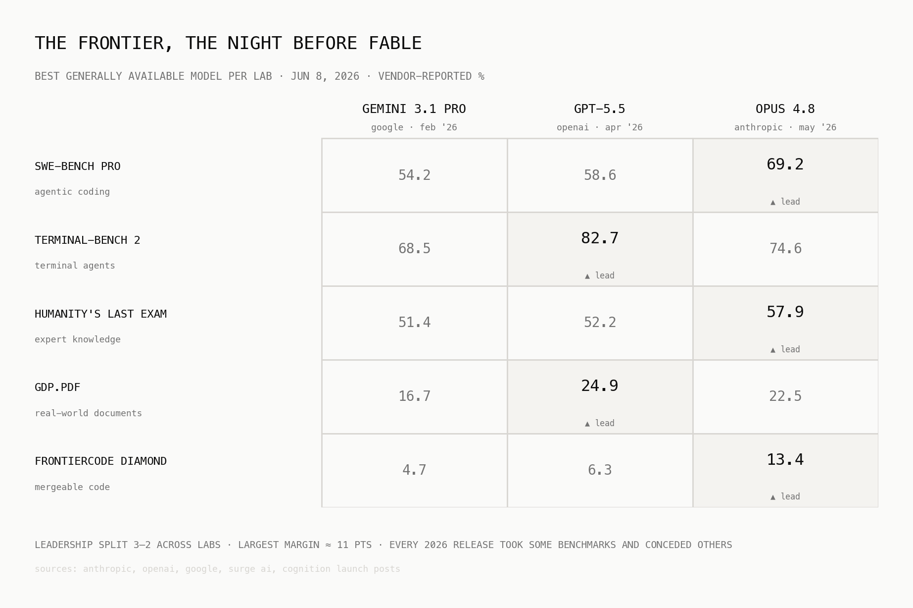
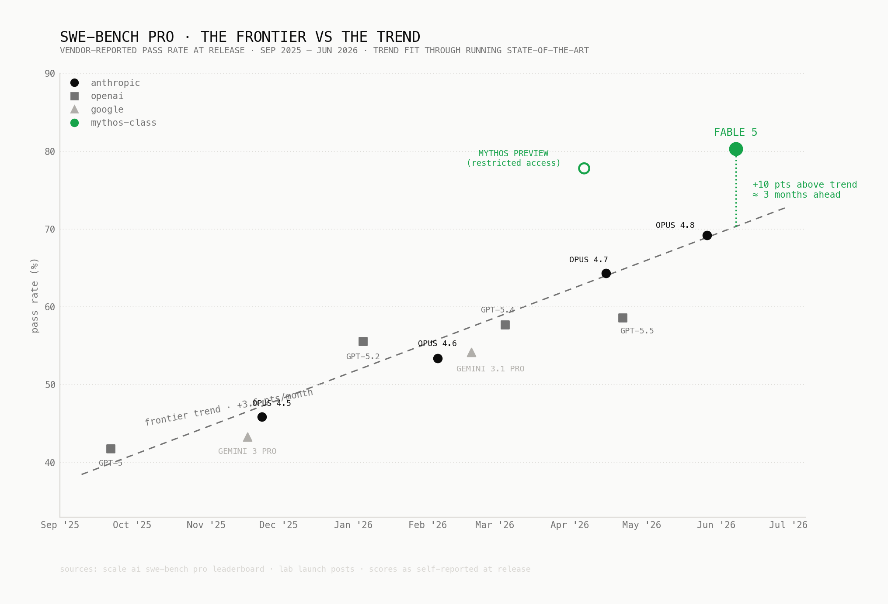

Anthropic takes the lead with Fable
Anthropic went from a $1B run-rate at the start of 2025 to $14B in February, passed OpenAI in April at $30B, and announced $47B in May alongside a Series H at a $965B valuation. This meteoric rise is at the back of mostly Claude Code alone which now writes ~4% of all public GitHub commits.
Interestingly though, all of that dominance was built without a dominant model.
The Claude Code moment, somewhere around mid-2025, was, to a large extent, a product win, not a benchmark win. Anthropic shipped the harness everyone wanted before everyone else. This first to market advantage created a snowball effect that has led to a 18% workplace adoption, up ~6x in a year, with the highest loyalty score in the category. Capability-wise though, the labs stayed within arm's reach of each other the whole time. Every release cycle the lab that ships, takes the lead on a few benchmarks by 3–7 points, concedes a few others to whoever shipped last month, and the lead changes hands again six weeks later.

And then Fable comes in, Fable 5 is the first Mythos-class model the public can touch, and it doesn't follow the trend. It makes a significant jump in every benchmark in the table above, 80.3 on SWE-Bench Pro (+11 over its own twelve-day-old predecessor), 64.5 on Humanity's Last Exam, and 29.3 on FrontierCode Diamond, more than double the best score from two days before. No concessions, no trades. That has not happened in any release in the past year.
The cleanest way to see how unusual this is: plot the frontier over time and fit the trend. Frontier coding capability has been improving at a remarkably steady ~3.6 points per month on SWE-Bench Pro, with each lab's release landing roughly where the line predicts. Fable lands 10 points above the line, about three months of progress ahead of schedule, in a field where the lead normally changes hands over one or two points.

And notice the hollow dot in April. That's Mythos Preview, the restricted model Anthropic disclosed on April 7 and refused to ship, scoring 77.8 while the best available model from any lab was at 57.7. The capability jump didn't even happen on June 9, it happened months ago, inside Anthropic, and was nearly four months ahead of trend when it did. Fable is basically that model with a safety layer bolted on, after two months of safeguard work. One caveat worth keeping is that these are vendor-reported launch numbers, and independent harnesses have historically scored a few points lower.
So Anthropic now leads on revenue, distribution, and for the first time capability, visibly and on every axis at once. Let's see how long they can keep that lead... 🍿